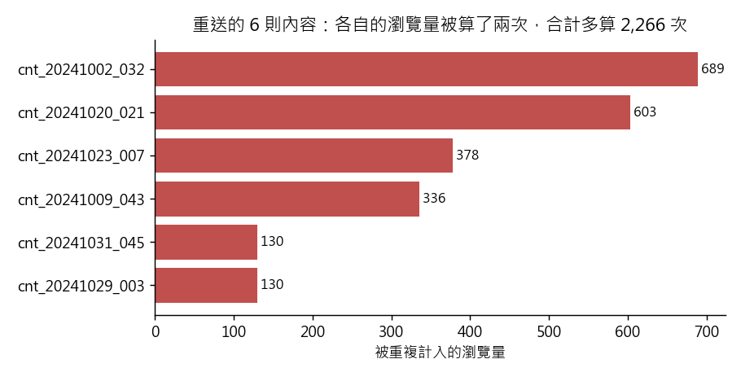

練習 01 - 月會上的則數對不對
在本單元中，會介紹第 1 題背後的商業問題、它練的是哪一種資料分析，以及從資料到結論的完整做法、程式與圖表。建議先回 Hub - 資料分析練習案例庫 自己試著做一次，再來對照這一頁。
有人會這樣問你
總編輯明天月會要說「十月我們發了 1,444 則報導、拿到 92 萬次瀏覽」，這兩個數字可以直接上投影片嗎？
用到的資料：content_monthly_flat（L1 的 content_monthly_2024_10.csv）
對應單元：第一次讓 AI 讀一張表
這一題在商業上要回答什麼
月會投影片上的數字，會變成部門的績效，也會變成下個月人力與預算的依據。這次只差 6 則，看起來無傷，但「一列就是一則」這句話一旦不成立，之後按記者、按版面拆的每一張報表都會跟著錯，被懷疑的是整個數據團隊的可信度。
這一題練的是哪一種資料分析
這是資料分析的第一步：資料盤點（data profiling）。動手算任何數字之前，先確認這張表的分析單位是什麼、主鍵是哪幾欄、主鍵是不是真的唯一。分析的價值來自可信度，而可信度從「這張表的一列代表什麼」開始。
一步一步怎麼做
- 先讀資料字典，把這張表的主鍵找出來（content_id ＋ stat_month），再用 pandas 的 duplicated() 檢查主鍵是不是真的唯一；發現不唯一就照 ingest_ts（入庫時間）取最新那一列，然後重新算則數與瀏覽量總和。
工具怎麼選 用 Python，因為「檢查主鍵有沒有重複」＋「按指定欄位去重」在 pandas 只要兩行，同一件事在 Excel 要一路拉公式比對才看得出來是哪幾列重覆。
看完整程式（Python）
from _kmg import *
df = flat()
print("列數", len(df))
print("不重複 content_id", df["content_id"].nunique())
dup_before = int(df.duplicated(["content_id", "stat_month"]).sum())
print("主鍵重複列數", dup_before)
dd = dedupe(df)
removed = df.loc[~df.index.isin(dd.index)]
print("去重後則數", len(dd))
print("去重後總瀏覽量", int(dd["pv"].sum()))
print("被多算的瀏覽量", int(df["pv"].sum() - dd["pv"].sum()))
pair = df[df.duplicated(["content_id", "stat_month"], keep=False)].drop(columns="ingest_ts")
print("重複列除 ingest_ts 外完全相同（列數）", int(pair.duplicated(keep=False).sum()))
naive = df.drop_duplicates()
dup_after = int(dd.duplicated(["content_id", "stat_month"]).sum())
gap = int(df["pv"].sum() - dd["pv"].sum())
rm = removed.sort_values("pv")
fig, ax = plt.subplots(figsize=(7, 3.6))
ax.barh(rm["content_id"], rm["pv"], color="#c0504d")
for y, v in enumerate(rm["pv"]):
ax.text(v, y, " %d" % v, va="center", fontsize=9)
ax.set_xlabel("被重複計入的瀏覽量")
ax.set_title("重送的 6 則內容：各自的瀏覽量被算了兩次，合計多算 %s 次" % format(gap, ","))
save_fig(fig, "ex01_duplicates.png")
看共用的讀檔函式 _kmg.py（每一題的 from _kmg import * 載入的就是它）
"""練習實跑的共用載入與記錄工具。每一題的腳本都 from _kmg import *。"""
import json
from pathlib import Path
import matplotlib
import numpy as np
import pandas as pd
matplotlib.use("Agg")
import matplotlib.pyplot as plt # noqa: E402
HERE = Path(__file__).resolve().parent
ROOT = HERE.parents[1] # projects/kmg_data_universe
L1, L2 = ROOT / "dist" / "L1", ROOT / "dist" / "L2"
RES = HERE / "results"
RES.mkdir(exist_ok=True)
RATE = 31.5 # 1 USD = 31.5 TWD（練習題指定的匯率）
# 圖上的中文：Windows 用正黑體，其他系統退回 Noto Sans TC
plt.rcParams["font.family"] = ["Microsoft JhengHei", "Noto Sans TC", "sans-serif"]
plt.rcParams["axes.unicode_minus"] = False
plt.rcParams["axes.spines.top"] = False
plt.rcParams["axes.spines.right"] = False
def flat():
return pd.read_csv(L1 / "content_monthly_2024_10.csv", encoding="utf-8-sig",
parse_dates=["publish_at", "ingest_ts"])
def ad():
return pd.read_csv(L1 / "ad_daily_2024_10.csv", encoding="utf-8-sig", parse_dates=["stat_date"])
def l2(name, **kw):
return pd.read_csv(L2 / name, encoding="utf-8-sig", **kw)
def dedupe(df):
"""主鍵 content_id＋stat_month 去重，重送的列取入庫時間最新的那一列。"""
return df.sort_values("ingest_ts").drop_duplicates(["content_id", "stat_month"], keep="last")
def twd(a):
return np.where(a["currency"] == "USD", a["revenue"] * RATE, a["revenue"])
def entropy_bits(p):
p = np.asarray(p, dtype=float)
p = p[p > 0] / p[p > 0].sum()
return float(-(p * np.log2(p)).sum())
def save_fig(fig, name):
fig.tight_layout()
fig.savefig(RES / name, dpi=130)
plt.close(fig)
結果會看到什麼
表裡有 1,444 列，但只有 1,438 個不同的 content_id——有 6 則內容因為報表重送各出現兩次，兩列除了 ingest_ts 以外一模一樣。去重後正確答案是 1,438 則、918,470 次瀏覽；被多算掉的 2,266 次瀏覽，剛好等於那 6 列的 pv 加總。誤差只有 0.25% 看似無傷，但「一列就是一則」這句話是錯的，之後任何按記者、按版面算則數的報表都會跟著錯。
圖怎麼讀

每一條是一則被重送的內容，長度是它的瀏覽量。這六則各被算了兩次，加起來就是總瀏覽量多出來的 2,266 次。繼續練習
下一題 練習 02 - 程序化平台該不該停，或回到 Hub - 資料分析練習案例庫 挑別的題目。
學生版｜更新於 2026-09-13 11:59